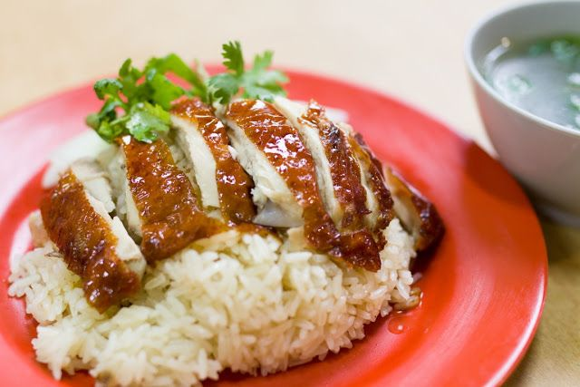

Back to Homepage
Chicken Rice

Description
A plate of sumptious Hainanese roasted chicken rice, the rice was steamed in chicken stock, served on a red plate, topped off with slices of roasted chicken breast with soy-sauce marinated brown skin, and topped off with a sprig of coriander leaves.
This dish is a local favourite of Singaporeans, typically sold by hawkers in Singapore hawker centres or "kopitiams".
Ingredients
- For the Chicken
- 1 Whole Chicken (1.5 kg) (remove neck, innards from the chest cavity and feet)
- 3 tbsp Honey
- 2 tbsp Maltose
- 1/2 tsp Five spice powder
- 1 tbsp Ginger juice, from grated ginger
- 4-5 tbsp Light Soy Sauce
- 1 tbsp Water
- Juice of 1 Lime
- Handful of Kosher Salt, for cleaning the raw Chicken
- For the Rice
- 2 cups Long Grain Rice
- 2 tsp Salt
- 5 slices Ginger (2-3 mm thick)
- 2 cloves Garlic, finely diced
- 2 1/4 cups Chicken stock
- 1 Pandan leaf, tied in a knot
- 2 tbsp Chicken fat with skin attached, obtained by trimming excess fat from Chicken
- 1 tsp butter
- 2 tbsp Water
- Oil for deep frying
- For the Soup
- 2 cups of Chicken stock
- 1/2 of a White radish, cut into chunks
- Few dashes Ground white pepper
- 1 tsp Salt to taste
- 1 tbsp sliced Spring onions or Coriander leaves for garnishing
- For the Chilli Sauce
- 4 whole Large Red Chillies
- 2 Red Chilli padi
- 2 cloves Garlic
- 4 slices 2 mm thick young Ginger
- 1 tbsp Calamansi lime juice
- 1 tsp Castor sugar
- 1 tbsp Chicken stock
- 1 tsp Chicken oil, gained from Chicken fat during the Rice preparation
- Salt to taste
- For the Ginger Sauce
- 40 g young Ginger, finely diced
- 2 cloves of Garlic, finely diced
- 1 tbsp Spring onion, finely sliced
- 1 tbsp Calamansi lime juice
- 1 tbsp Chicken stock
- 1 tsp Chicken oil, gained from Chicken fat during the Rice preparation
- Salt to taste
- For the Sides
- 1 Fresh Cucumber peeled and seeded, cut into half (lengthwise) and sliced into 2 cm slices (diagonally)
Steps
- For the Chicken:
- Cut off excess fat and skin from the chicken and keep it aside for use later in the next step.
- Start by rubbing a handful of kosher salt all over the chicken skin including the cavity to remove trapped-in dirt and blood off the skin.
- Wash away the salt with lukewarm water.
- Combine Honey, Maltose, Five spice powder, Ginger juice, Juice of 1 lime, Water and Light soy sauce in a bowl. Stir to mix the marinade and bring to a simmer.
Use a “S” hook so that you can hold the chicken upright with one hand by piercing it through the neck or wing.
- Hold the chicken upwards with one hand, generously ladle hot marinated mixture onto the chicken to “tighten” the chicken skin, till the whole chicken is coated with the marinade and is 20% cooked on the outside and coloured light brown.
- Hang the marinated chicken to air dry or put it in the refrigerator for at least 1-2 hours.
- Prepare a deep pot of hot oil. When oil is hot enough, reduce the heat and lower the bird slowly and carefully into the oil to cook it. The hook should be intact to the chicken for easy lifting later.
- Deep fry the chicken until the skin is browned and crisp. Remove the chicken from the oil and set aside. Hang chicken for 15 mins to drip away the excess oil. Then cut chicken into serving portions.
- For the Fragrant Rice:
- Rinse the rice thoroughly with 2-3 changes of water to remove excess starch and the water runs clear. Soak rice in plenty of water with 1 teaspoon of salt added (This way every grain of rice absorbs the salty water and tastes even better). Soak for 20 minutes and drain once completed.
- Heat the rice cooker and add the chicken fat with 2 tablespoons of water. Bring it down to a simmering boil for about 10 minutes until oil is released from the fat. Keep 2 teaspoons of the oil for the Chilli and Ginger sauce while the rest of it will be used for the Rice.
- Add butter, garlic and ginger and fry until aroma in the rice cooker. Add in rice and 1 teaspoon of salt and continue to fry for another 2 minutes. Discard the piece of chicken fat and transfer all other ingredients into a rice cooker.
- Pour in chicken stock and add pandan leaf and cook rice. Don’t stir the rice too much or you might break the long grains as they become quite soft on cooking. Once cooked, use a wooden ladle to fluff the rice.
- For the Soup:
- Bring the chicken stock to the boil and add white radish in a small stock pot on medium heat until white radish become just tender. Season with salt and pepper.
- Keep warm on very low heat until it’s ready to serve. Garnish with spring onion slices or coriander leaves when serving.
- For the Chilli Sauce:
- Throw all ingredients into a mortar and pestle or a blender, blend until you get a sauce like consistency (not too smooth).
- For the Ginger Sauce:
- Throw all ingredients into a mortar and pestle or a blender, blend until you get a sauce like consistency (not too smooth).
Recipe ingredients & steps credits to Singapore Food
Photo credits to Moris Monte